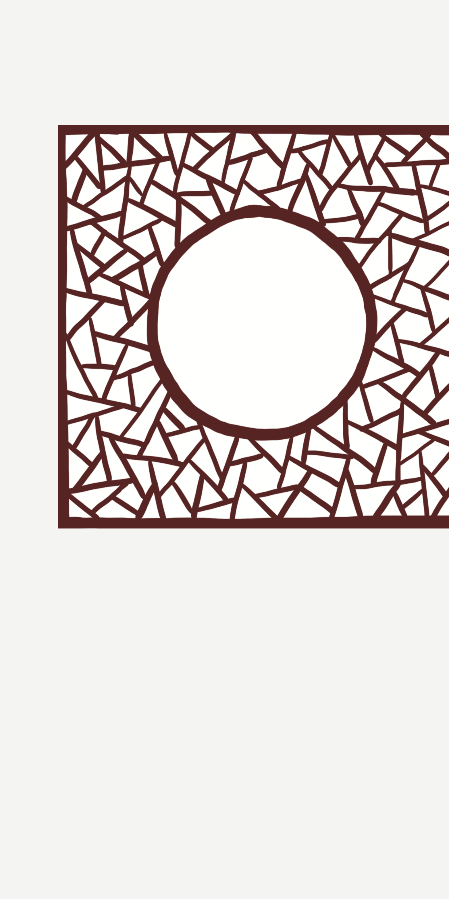
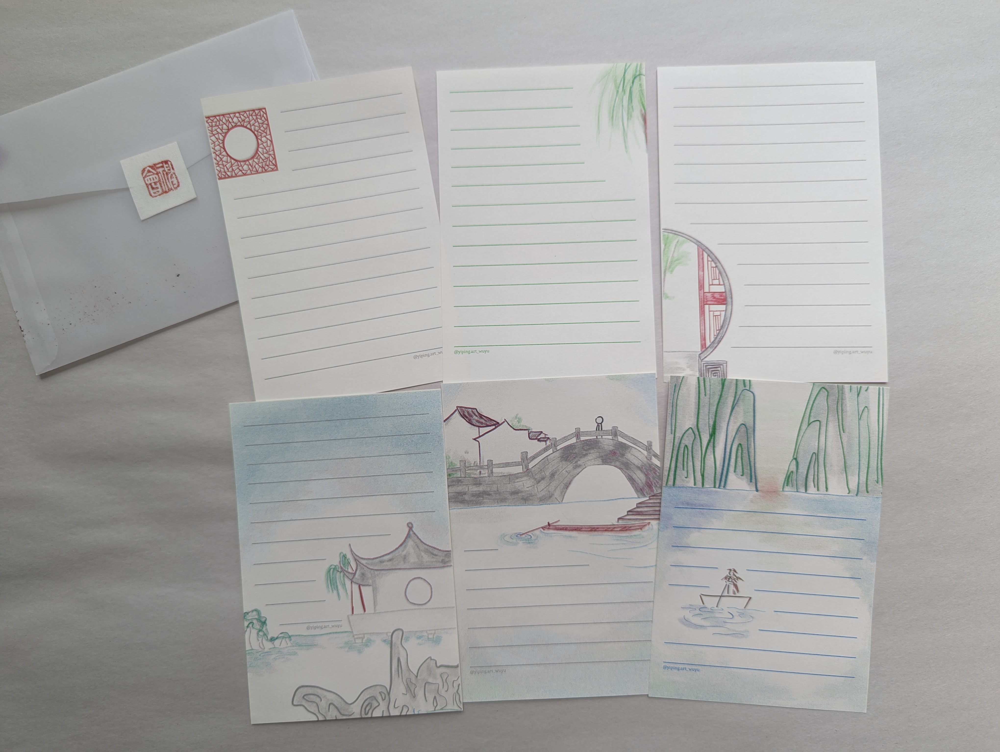
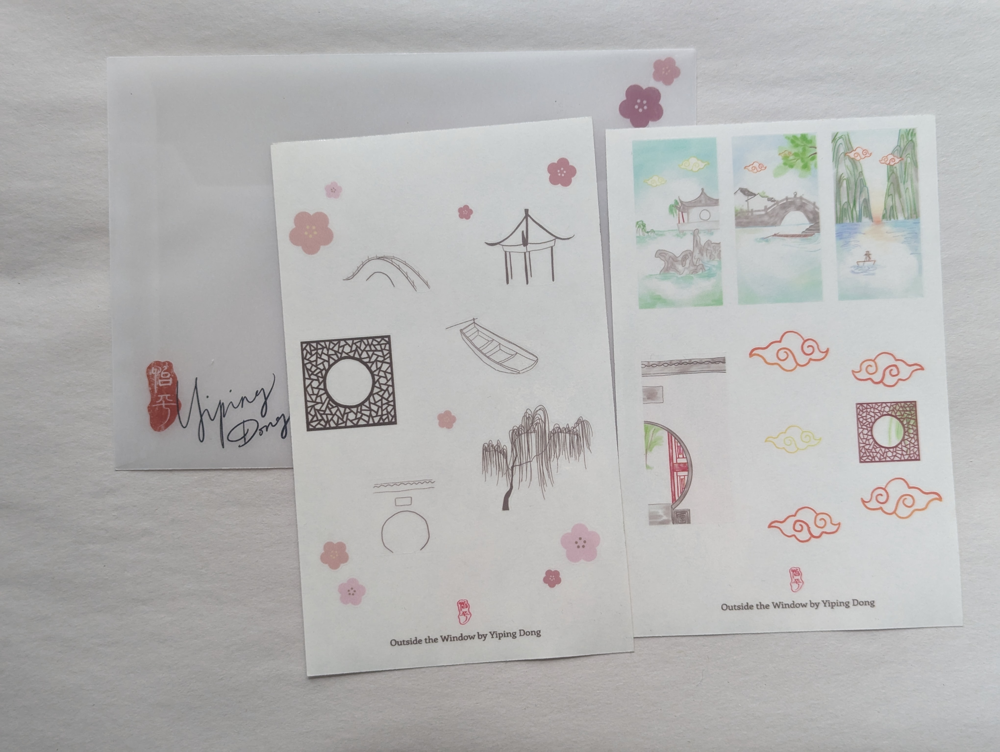

Outside the Window
Undergrad
Flip Through Video Link
The series of images started with a scenery inside a window, and get out of the room, step into the garden, then exit the garden, into the beautiful world. The choice of using vellum allowed a sense of approaching the scenery from far.
This is an image only zine. Drawings are done digitally with Pro Create.
The zine is hand saddle stitched.



I also made note sheets and stickers with the images of this zine.
The stickers are printed on vinyl, and the note sheets are risographed with four colors.

